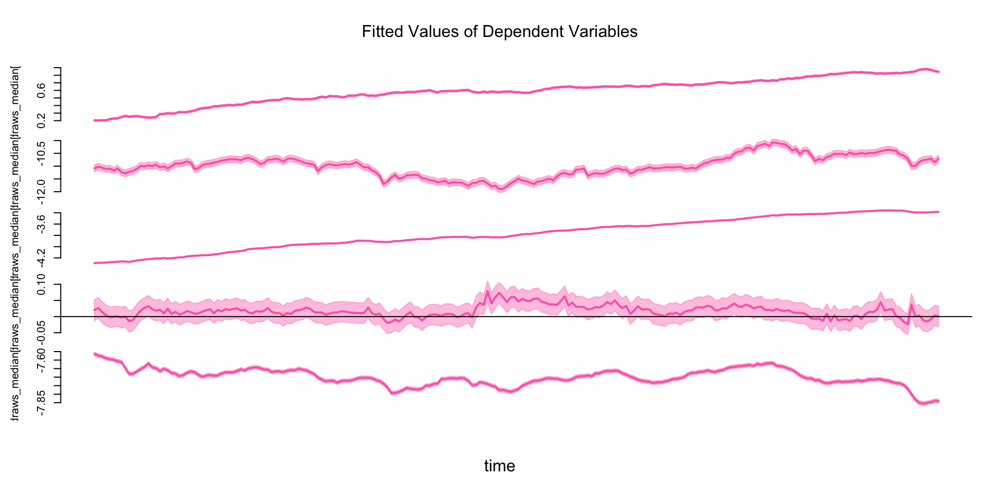
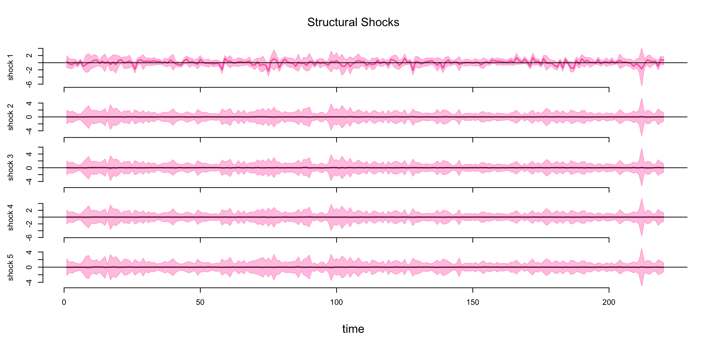

Introduction to Empirical Macroeconomics with R
Workshops for Ukraine
![]()
University of Melbourne
About me
PhD student at the University of Melbourne
Interested in Bayesian econometrics
Author of the R package
bsvarSIGNs

Plan for today
Vector Autoregression (VAR)
Structural Vector Autoregression (SVAR)
Applications in Macroeconomics
Many fun exercises in R!
Prerequisites
- Install the
bsvarSIGNspackage
- Download files from https://github.com/bsvars/2025-03-bsvarSIGNs-w4UKR/tree/master/exercises
Vector Autoregression
Vector Autoregression (VAR)
A VAR model is a
system of equationswhere each variable is regressed on its own lagged values and the lagged values of all other variablesThis allows us to model the linear dynamic interdependencies
e.g. a bivariate VAR(1):
\[ \begin{align*} \begin{bmatrix} y_{1,t} \\ y_{2,t} \\ \end{bmatrix} & = \begin{bmatrix} A_{1,11} & A_{1,12} \\ A_{1,21} & A_{1,22} \\ \end{bmatrix} \begin{bmatrix} y_{1,t-1} \\ y_{2,t-1} \\ \end{bmatrix}+ \begin{bmatrix} \varepsilon_{1,t} \\ \varepsilon_{2,t} \\ \end{bmatrix}, & \begin{bmatrix} \varepsilon_{1,t} \\ \varepsilon_{2,t} \\ \end{bmatrix} ~ & \sim N\left( \begin{bmatrix} 0 \\ 0 \\ \end{bmatrix}, \begin{bmatrix} \Sigma_{11} & \Sigma_{12} \\ \Sigma_{12} & \Sigma_{22} \\ \end{bmatrix} \right) \\ y_t & = A_1 y_{t-1} + \varepsilon_t , & \varepsilon_t & \sim N(0, \Sigma) \end{align*} \]
Useful for forecasting, Granger causality test etc.
Matrix representation
Generally, a VAR(p) model:
\[ \begin{align*} y_t & = A_1 y_{t-1} + A_2 y_{t-2} + \dots + A_p y_{t-p} + A_dd_t + \varepsilon_t \\ y_t & = \begin{bmatrix} A_1 & \dots & A_p & A_d \end{bmatrix} \begin{bmatrix} y_{t-1} \\ \vdots \\ y_{t-p} \\ d_t \end{bmatrix} + \varepsilon_t \\ \end{align*} \]
Where \(d_t\) contains exogenous variables e.g. the constant term
More compatly,
\[ \begin{align*} y_t & = Ax_t + \varepsilon_t, & \varepsilon_t & \sim N(0, \Sigma) \\ \end{align*} \]
Bayesian estimation
Want to estimate \(A\) and \(\Sigma\), there is a conjugate prior
\[ A|\Sigma\sim MN(\underline{A}, \Sigma, \underline{V}),\quad \Sigma\sim IW(\underline{S}, \underline{\nu}) \]
This generates closed-form posterior distributions
\[ A|\Sigma,\text{data}\sim MN(\bar{A}, \Sigma, \bar{V}),\quad \Sigma|\text{data}\sim IW(\bar{S}, \bar{\nu}) \]
\(MN\) is the matrix normal distribution
\[ A\sim MN(M,U,V)\Leftrightarrow \text{vec}(A)\sim N(\text{vec}(M),V\otimes U) \]
\(IW\) is the inverse Wishart distribution
- Distribution for positive-definite matrices (covariance)
- A generalization of the inverse gamma distribution
Minnesota prior
Still need to decide \(\underline{A}\), \(\underline{V}\), \(\underline{S}\), \(\underline{\nu}\)
- for non-stationary variables, set corresponding elements in \(\underline{A}\) to 1
- Shrink distant lagged coefficients to zero with small values in \(\underline{V}\)
- \(\underline{S}=I\), \(\underline{\nu}=n+2\)
Improves forecast by reducing overfitting
An example
productivity stock_prices consumption real_interest_rate hours_worked
[1,] 0.2172072 -11.28895 -4.331866 0.008022252 -7.599184
[2,] 0.2129482 -11.17647 -4.324255 0.021877748 -7.592445
[3,] 0.2069894 -11.11805 -4.318455 0.018811208 -7.580577
[4,] 0.2003908 -11.08317 -4.301382 0.012867114 -7.572133
[5,] 0.1945243 -11.02211 -4.293948 0.024503568 -7.577512
[6,] 0.2002138 -11.06306 -4.291474 0.000876887 -7.577491The
optimismdataset is available in thebsvarSIGNspackageContains 5 quarterly US data from 1955Q1 to 2010Q4
- productivity: total factor productivity on John Fernald’s website
- stock prices: S&P 500 index divided by CPI, logged
- consumption: real consumption expenditures, logged
- real interest rate: federal funds rate minus inflation
- hours worked: hours of all persons in the non-farm sector, logged
Estimation in R
**************************************************|
bsvarSIGNs: Bayesian Structural VAR with sign, |
zero and narrative restrictions |
**************************************************|
Progress of simulation for 5000 independent draws
Press Esc to interrupt the computations
**************************************************|- Two lines of code!
Fitted values
Forecast

Exercise 1
Open the
ex1.RfileRun the whole script to plot the fitted values and forecasts
Structural Vector Autoregression
Structural Vector Autoregression (SVAR)
Recall the VAR equation
\[ y_t = Ax_t + \varepsilon_t \]
SVAR defines a linear relation between \(\varepsilon_t\) and strutural shocks \(u_t\)
\[ u_t = B\varepsilon_t,\quad u_t\sim N(0, I) \]
\(u_{1,t},\dots,u_{n,t}\) are independent with each other and across time
- they are \(n\) distinct causal drivers
While \(\varepsilon_t\) is a mixture of the structural shocks, causal relation is not clear \[ \varepsilon_t = B^{-1}u_t = B_0u_t \]
Simultaneous equation
SVAR is a system of simultaneous equations
\[ \begin{align*} y_t & = Ax_t + \varepsilon_t \\ y_t & = Ax_t + B_0u_t \\ By_t & = BAx_t + u_t \end{align*} \]
e.g. suppose supply and demand are determined simultaneously
\[ \begin{align*} p_{t} & = \frac{-B_{12}}{B_{11}}q_t + \dots + u_{t}^D, & B_{11}>0,B_{12}>0 \\ q_{t} & = \frac{-B_{21}}{B_{22}}p_t + \dots + u_{t}^S, & B_{22}>0,B_{21}<0 \end{align*} \]
In the SVAR notation, \[ \begin{align*} \begin{bmatrix} B_{11} & B_{12} \\ B_{21} & B_{22} \\ \end{bmatrix} \begin{bmatrix} p_{t} \\ q_{t} \\ \end{bmatrix} & = \dots+ \begin{bmatrix} u_{t}^D \\ u_{t}^S \\ \end{bmatrix} \\ By_t & = \dots+u_t \end{align*} \]
Identification problem
After fitting a VAR,
\[ y_t = Ax_t + \varepsilon_t,\quad \varepsilon_t\sim N(0, \Sigma) \]
We have \(A\) and \(\Sigma\), but without restrictions cannot recover \(B\)
\[ y_t = Ax_t + B^{-1}u_t,\quad u_t\sim N(0, I) \]
Since \(B\) has \(n^2\) elements, and \(\Sigma\) is symmetric and has only \(n(n+1)/2\) elements
Need \(n(n-1)/2\) restrictions to identify \(B\)
- e.g. fix \(B\) to be lower triangular,
\[ \begin{align*} \begin{bmatrix} \ast & 0 \\ \ast & \ast \\ \end{bmatrix} \begin{bmatrix} p_{t} \\ q_{t} \\ \end{bmatrix} & =\dots+ \begin{bmatrix} u_{t}^D \\ u_{t}^S \\ \end{bmatrix} \end{align*} \]
Can be controversial, price does not depend on quantity in demand equation?
Sign restriction 1: \(B\)
A less controversial way is to impose sign restrictions
e.g. demand (supply) curve should have negative (positive) slope
- higher price \(\Rightarrow\) lower (higher) quantity demanded (supplied)
- normalize \(B_{11}\) and \(B_{22}\) positive
- restrict \(B_{12}\) positive and \(B_{21}\) negative
\[ \begin{align*} B_{11}p_{t} & = -B_{12}q_t + \dots + u_{t}^D \\ B_{22}q_{t} & = -B_{22}p_t + \dots + u_{t}^S \end{align*} \]
In the SVAR notation, \[ \begin{align*} \begin{bmatrix} + & + \\ - & + \\ \end{bmatrix} \begin{bmatrix} p_{t} \\ q_{t} \\ \end{bmatrix} & =\dots + \begin{bmatrix} u_{t}^D \\ u_{t}^S \\ \end{bmatrix} \end{align*} \]
Exercise 2
Open the
ex2.RfileThis exercise simulates (log) price and (log) quantity data from
\[ \begin{align*} \begin{bmatrix} 1 & 1 \\ -1 & 1 \\ \end{bmatrix} \begin{bmatrix} p_{t} \\ q_{t} \\ \end{bmatrix} & = \begin{bmatrix} 1 & 0 \\ 0 & 1 \\ \end{bmatrix} \begin{bmatrix} p_{t-1} \\ q_{t-1} \\ \end{bmatrix}+ \begin{bmatrix} u_{t}^D \\ u_{t}^S \\ \end{bmatrix} \end{align*} \]
Goal: estimate matrix \(B\) by imposing restrictions on
- structural matrix \(B\)
Hint: slide 20
Sign restriction 2: IRFs
There is nothing stopping us from imposing restrictions on \(B_0\)
\(B_0\) is the impulse response function (IRF) at horizon 0, why?
\[ y_t = Ax_t + B_0u_t \]
e.g. consider the
optimismdataset, can define optimistic shock as\[ \begin{align*} \begin{bmatrix} \text{productivity}_t \\ \text{stock_prices}_t \\ \text{consumption}_t \\ \text{real_interest_rate}_t \\ \text{hours_worked}_t \\ \end{bmatrix} =\dots+ \begin{bmatrix} \ast & \ast & \ast & \ast & \ast \\ + & \ast & \ast & \ast & \ast \\ \ast & \ast & \ast & \ast & \ast \\ \ast & \ast & \ast & \ast & \ast \\ \ast & \ast & \ast & \ast & \ast \\ \end{bmatrix} \begin{bmatrix} u_{t}^\text{optimism} \\ u_{2,t} \\ u_{3,t} \\ u_{4,t} \\ u_{5,t} \\ \end{bmatrix} \end{align*} \]
Can impose restrictions on IRFs at further horizons
- e.g. \(A_1B_0\) at horizon 1, etc. \[ \begin{align*} y_{t+1} & = A_1 y_{t} + \dots \\ & =A_1(Ax_t+B_0u_t)+\dots \\ & =A_1B_0u_t+\dots \end{align*} \]
Sign restriction 3: narrative
Suppose there is strong evidence for the history of the shocks
e.g. a negative (unfavorable) supply shock at the begining of COVID-19
\[ u_{2020Q1}^S < 0 \]
e.g. a negative optimism shock at the begining of Global Financial Crisis
- a pessimistic shock! \[ u_{2007Q3}^{\text{optimism}} < 0 \]
Sign and zero restriction
Placing \(n(n-1)/2\) zero restrictions can be controversial
Might desire to impose just few zeros and signs on the IRFs
e.g. again the
optimismdataset\[ \begin{align*} \begin{bmatrix} \text{productivity}_t \\ \text{stock_prices}_t \\ \text{consumption}_t \\ \text{real_interest_rate}_t \\ \text{hours_worked}_t \\ \end{bmatrix} =\dots+ \begin{bmatrix} 0 & \ast & \ast & \ast & \ast \\ + & \ast & \ast & \ast & \ast \\ \ast & \ast & \ast & \ast & \ast \\ \ast & \ast & \ast & \ast & \ast \\ \ast & \ast & \ast & \ast & \ast \\ \end{bmatrix} \begin{bmatrix} u_{t}^\text{optimism} \\ u_{2,t} \\ u_{3,t} \\ u_{4,t} \\ u_{5,t} \\ \end{bmatrix} \end{align*} \]
Can interpret first shock as an optimistic shock
- No effect on productivity
- Positive effect on stock prices
Dynamic causal effects: IRFs
Visualize structural shocks
Shock contribution: forecast error variance decomposition
Exercise 3
Open the
ex3.RfileThis exercise analyzes the US
optimismdatasetGoal: replicate the IRF plot by imposing restrictions on
- IRFs
Hint: slide 24
Exercise 4
Open the
ex4.RfileThis exercise extends the analysis on the US
optimismdatasetGoal: compare IRF plots by additionally imposing
- optimism shock is negative in 2007Q4, the start of the GFC
Hint: slide 23, row 211 of the dataset corresponds to 2007Q4, and
Appliactions in Macroeconomics
Monetary policies
- According to Wikipedia…
Monetary policy is the policy adopted by the monetary authority of a nation to affect monetary and other financial conditions to accomplish broader objectives like high employment and price stability.
Central banks can
- raise interest rate \(\Rightarrow\) save more \(\Rightarrow\) less money in market, contractionary
- lower interest rate \(\Rightarrow\) save less \(\Rightarrow\) more money in market, expansionary
Think of economy like a machine
- high inflation/output means overheating, need to cool down, contractionary monetary policy!
- low inflation/output means underperforming, need to heat up, expansionary monetary policy!
Taylor rule
A simple rule to describe monetary policy
\[ i_t = r_t + \pi_t + a_\pi(\pi_t-\pi^*) + a_y(y_t-y^*), \quad a_\pi, a_y > 0 \]
- \(i_t\): nominal policy interest rate
- \(r_t\): natural interest rate
- \(\pi_t\): inflation rate
- \(\pi^*\): inflation target
- \(y_t\): GDP
- \(y^*\): potential GDP
Raise interest rate (cool down) when inflation/output is too high
Lower interest rate (heat up) when inflation/output is too low
Usually, there is some form of the Taylor rule in a SVAR model
An Australian example
Is raising interest rate really contractionary?
Let’s analyze the effect of a positive monetary policy shock
4 variables, from 1982Q1 to 2019Q4
- CASH: cash rate, the policy interest rate in Australia
- GDP: real gross domestic product
- CPI: trimmed mean consumer price index, a measure of inflation
- TWI: trade-weighted exchange rate, higher TWI means stronger AUD
# A tibble: 6 × 5
Date CASH GDP CPI TWI
<dttm> <dbl> <dbl> <dbl> <dbl>
1 1982-03-31 00:00:00 15.4 156752 29.8 88.8
2 1982-06-30 00:00:00 18.4 158171 30.6 88.2
3 1982-09-30 00:00:00 17.8 157114 31.5 83.8
4 1982-12-31 00:00:00 13.7 154627 32.3 83.4
5 1983-03-31 00:00:00 13.9 153074 33.0 76.1
6 1983-06-30 00:00:00 12.1 152783 33.6 77.7Contemporaneous relations \(B\)
Treat first shock as a monetary policy shock, using the SVAR notation,
\[ \begin{align*} \begin{bmatrix} B_{11} & B_{12} & B_{13} & B_{14} \\ B_{21} & B_{22} & B_{23} & B_{24} \\ B_{31} & B_{32} & B_{33} & B_{34} \\ B_{41} & B_{42} & B_{43} & B_{44} \\ \end{bmatrix} \begin{bmatrix} \text{CASH}_t \\ \text{GDP}_t \\ \text{CPI}_t \\ \text{TWI}_t \\ \end{bmatrix} =\dots+ \begin{bmatrix} u_{t}^{MP} \\ u_{2,t} \\ u_{3,t} \\ u_{4,t} \\ \end{bmatrix} \end{align*} \]
The first row is similar to the Taylor rule
\[ B_{11}\text{CASH}_t = -B_{12}\text{GDP}_t - B_{13}\text{CPI}_t - B_{14}\text{TWI}_t + \dots + u_{t}^{MP} \]
Base on previous discussion, we can restrict
- \(B_{11}>0\), normalization
- \(B_{12}<0\), cool down when high GDP
- \(B_{13}<0\), cool down when high inflation
- \(B_{14}>0\), discourage investing in AUD when high exchange rate
IRFs
Restricting \(B\) is not enough, let’s consider the IRFs
What happends to the variables when there is a positive monetary policy shock?
- CASH: increases, by definition
- GDP: unrestricted, since we are interested in its response
- CPI: decreases, expect negative inflation
- TWI: increases, encourage investing in AUD
\[ \begin{align*} \begin{bmatrix} \text{CASH}_t \\ \text{GDP}_t \\ \text{CPI}_t \\ \text{TWI}_t \\ \end{bmatrix} =\dots+ \begin{bmatrix} + & \ast & \ast & \ast \\ \ast & \ast & \ast & \ast \\ - & \ast & \ast & \ast \\ + & \ast & \ast & \ast \\ \end{bmatrix} \begin{bmatrix} u_{t}^{MP} \\ u_{2,t} \\ u_{3,t} \\ u_{4,t} \\ \end{bmatrix} \end{align*} \]
Can extend these restrictions to horizons \(1,2,3\)
Result

Exercise 5
Open the
ex5.RfileThis exercise analyzes the Australian monetary policy dataset
Goal: replicate the IRF plot by imposing restrictions on
- structural matrix \(B\)
- IRFs
Hint: slide 27 and 28

adamwang15[at]gmail.com
adamwang15
adamwang15
adamwang15.bsky.social